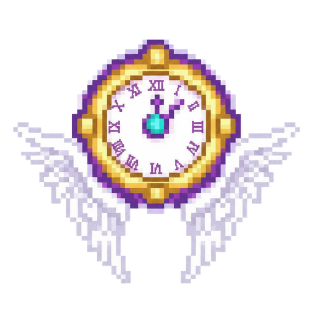
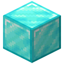

Made in Heaven

Музыка на весь сервер, громкость 100. Звук лучше включить.
Фрагмент самого времени. Один раз нажимаешь ПКМ, и сутки пролетают за секунды. Через 36 секунд вселенная совершает полный круг, а ты стоишь в полдень новой.
Дневник DIO
Способ попасть на небеса DIO оставил в дневнике: четырнадцать слов, которые надо произнести по порядку. Ачивка за крафт так и называется, «Рецепт из дневника DIO.», а её описание и есть эти слова. Жми по порядку.
Предмет
Восемь алмазных блоков вокруг часов, то есть 72 алмаза за 36 секунд. Складывается по одному, после активации исчезает. Зачаровывается, и чары меняют то, чем мир перезапишется.

8 алмазных блоков= 72В моде стенд помещается в один предмет. Способность та же: время разгоняется, пока вселенная не пройдёт круг, и мир вокруг начинается заново.
Хронометр
Каждый тик к времени мира прибавляется всё больше. Сначала 20 тиков за тик, это время ×20. В самом конце почти 17 000, и игровые сутки проходят за 0,07 секунды. Тяни ползунок.
Не долетит
Пока время ускорено, всё, что в тебя летит, разворачивается в 4,5 блока от тебя и уходит обратно. Хозяином снаряда становишься ты, так что попадание по стрелку засчитывается тебе.
Сброс вселенной
На 720-м тике блоки вокруг заменяются. До 8 блоков от тебя всё, дальше шанс падает на 5% с каждым блоком, до 20. Без чар на место встаёт случайный блок, только из ванильного Minecraft и ZitraksMode, ничего из других модов. Вода, двери, кровати, цветы, факелы и бедрок не трогаются. Вид сверху, ты в центре.
Эффект вселенной
Сразу после сброса новая вселенная выдаёт один случайный эффект из двенадцати. Две минуты, второй уровень. Шанс у всех одинаковый.
Законы нового мира
Достижения
Три скрытые ачивки, по одной на каждый шаг: скрафтить, нажать, дожить до сброса. Здесь они выдаются так же, как в игре.